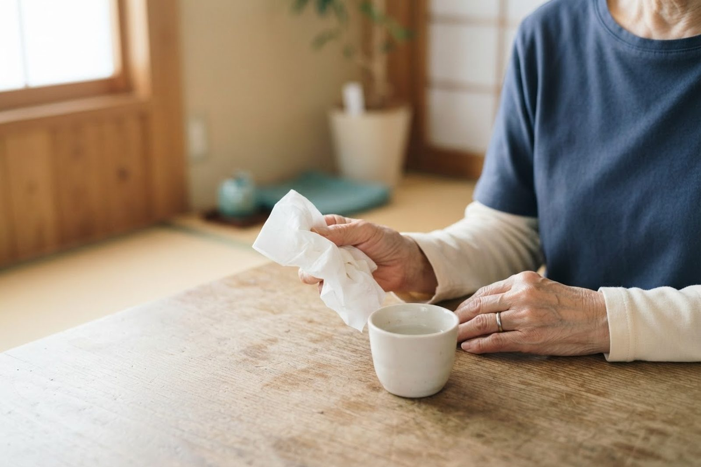

痰がずっとからむのですが、心配な痰の見分け方はありますか？
A. 回答痰は、気道に入ってきたほこりや細菌を絡めとって外に出すための分泌物で、健康な方でも少量はつくられています。透明から白っぽい痰が数日で落ち着く場合は、経過をみていただくことが多い症状です。一方で、黄色や緑色の濃い痰が毎日出る、痰がらみが3週間以上続く、血が混じるといった場合には、気道や肺、あるいは鼻の奥に炎症が続いている可能性があります。特に血の混じった痰は、量が少なくても一度は原因を調べておくことがすすめられています。痰の症状は内科・呼吸器内科で扱う症状ですので、気になるときはご相談ください。

痰の色と、痰がからむ主な原因
痰の色は、気道の粘液に炎症を起こした細胞や細菌、出血などが混ざることで変わるとされています。ただし色だけで原因が決まるわけではなく、経過や熱の有無、ほかの症状と合わせて考えていきます。
- 透明〜白色：かぜのひきはじめやアレルギー、空気の乾燥などでみられることが多い色です。粘り気が強くなると切れにくく感じます。
- 黄色：炎症に伴って白血球（細菌などと戦う血液の成分）が増えたときにみられます。細菌感染に伴うこともありますが、ウイルスによるかぜでも黄色くなることがあり、色だけでは判断できないとされています。
- 緑色：炎症が長く続いているときや、特定の細菌が関わっているときにみられることがあります。毎日続く場合は一度診察を受けることがすすめられます。
- さび色・茶色：以前に出た少量の出血が時間をおいて混ざった状態のことがあります。
- ピンク〜赤（血痰）：気道のどこかから出血していることを示すサインとされ、量が少なくても原因を確かめておくことが大切です。
痰がからむ状態が長引く背景には、次のようなものが挙げられます。
- かぜ・急性気管支炎などの気道の感染症：もっとも多い原因で、多くは数日から2〜3週間で軽くなっていきます。
- 後鼻漏（こうびろう）：副鼻腔炎やアレルギー性鼻炎で鼻の分泌物がのどに流れ落ち、痰がからむ・咳払いが増えると感じる状態です。朝に強く出やすいのが特徴とされています。
- 気管支喘息やCOPD（慢性閉塞性肺疾患）：長期の喫煙や気道の慢性的な炎症が背景にあり、痰と息切れが一緒に続くことがあります。
- 気管支拡張症：気管支が広がったまま戻らず、色のついた痰が長く続いたり、血痰や肺炎を繰り返したりすることがあるとされています。
- 胃食道逆流：胃の内容物がのどの方へ逆流し、食後や横になったときに痰がらみ・声のかすれとして感じられる場合があります。
受診の目安
痰そのものは日常的にみられる症状ですが、次のような場合は放置せずご相談ください。
判断に迷われるときは、救急安心センター事業「＃7119」（岡山県内で利用できます）にご相談いただけます。総務省消防庁の「全国版救急受診アプリ（Q助）」も目安になります。
すぐに受診を検討してください
- 咳とともにまとまった量の血を吐いた（喀血）：窒息につながるおそれがあるとされ、息が苦しい・意識がもうろうとするといった様子があれば救急要請（119番）をご検討ください。夜間や休日は救急病院の受診がすすめられています
- 赤い血の混じった痰が繰り返し出る
- 息が苦しい、少し動いただけで息が切れる、唇や指先の色が悪い
- 38度以上の熱と、色のついた痰・胸の痛みが同時にある
- ぐったりしている、水分がとれない、意識がぼんやりする
- ピンク色で泡立った痰が出て、横になると息苦しさが強まる
- 血をさらさらにするお薬（抗凝固薬・抗血小板薬）を使っていて血痰が出た
早めの受診をおすすめします
- 痰や痰がらみの咳が3週間以上続いている
- 黄色や緑色の痰が毎日出る、または量が増えてきた
- 血のすじが混じった痰が一度でもあった
- 体重が減ってきた、寝汗をかくようになった
- 喫煙歴があり、坂道や階段で息切れを感じるようになった
- 気管支炎や肺炎を年に何度も繰り返している
- 市販のお薬をしばらく使っても変化がない
当院での対応
いなだ医院は内科・呼吸器内科・感染症内科・アレルギー科を標榜しており、痰や長引く咳のご相談をお受けしています。まず、いつから続いているか、痰の色や量、熱・息切れ・胸の痛みなどの有無、喫煙歴やお仕事の環境などを伺い、のどや胸の音を確認します。そのうえで必要と判断した場合には血液検査や画像検査、感染症に関する検査などをご提案し、当院で行えない検査については連携する医療機関へご紹介いたします。食後や就寝時に症状が強い場合には、胃や食道からの影響を考えて消化器内科（胃腸科）としての診療につなげることもあります。発熱を伴う場合の発熱外来をご用意しており、平日・土曜とも朝7時から診療していますので、お仕事やご予定の前にも受診いただけます。駐車場は無料で22台分ございます。
受診時に伝えていただきたいこと
- いつから、どのくらい続いているか
- 痰の色・量・粘り気、血が混じったことがあるか
- どんなときに強くなるか（朝方・食後・横になったとき など）
- 熱、息切れ、胸の痛み、体重の変化などほかに気になる症状はあるか
- 喫煙歴、これまでにかかった呼吸器の病気、現在お使いのお薬
参考にした情報
痰の色が気になる、血が混じった、痰がらみが長く続いている——そんなときは自己判断せず、まずはご相談ください。
最終更新：2026年8月26日